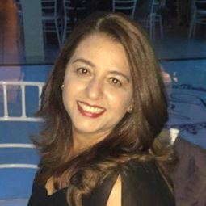

O Evento
Mensagem da Diretora
A X Semana Acadêmica do Polo São Gonçalo, que acontecerá nos dias 2, 3, 4 e 5 de outubro de 2019, terá um gostinho a mais nessa edição, pois estaremos comemorando o nosso 10º aniversário de funcionamento. E como não poderia ser diferente, teremos a cada dia , palestras, exposições, mostras e oficinas, onde a troca de conhecimentos será o norte do evento.O grande diferencial desta edição é a grande participação dos discentes, onde o empenho e a imaginação caminham numa só direção: enriquecimento dos conhecimentos, a interdisciplinaridade, o interagir dos Cursos através das diversas atividades acadêmicas que estão programadas para esta semana! Quero desde já, agradecer aos discentes, docentes, mediadores pedagógicos, articuladores acadêmicos , coordenações, palestrantes, Mestres, doutores, convidados e ao Polo Cederj/UAB -São Gonçalo como um todo.
Logo, esperamos VOCÊ para construir conosco esta semana que será inesquecível!
"Clayde Mara Venâncio"
Diretora do Pólo São Gonçalo
Palestrantes
Confira alguns de nossos palestrantes.
Profa.Me. Jane Vieira Volotão
Doutoranda em Computação da UFF - Eng. Civil Petrobras
Mini-Curso - "VBA para Excel"
Pós-Dr.Carlyle Tadeu Falcão de Oliveira
Pós-doutor em Administração pela Universidade Federal Fluminense;
Mesa Redonda: "Turismo e Educação"
Hans Paul Mösl Junior
Graduando em Computação (UFF)
Palestra: "Home Office: benefícios e desafios ao se trabalhar de casa"
Me. Ricardo Dias da Costa
Doutorando em Educação, Contextos Contemporâneos e Demandas Populares - UFRRJ
Mesa Redonda: "Turismo e Educação"
Prof. Marcelo Azeredo
Secretário de Educação SG.
Palestra "Liderança e Motivação"
Daniel Gomes Falcão
Aluno de Sistemas de Computação - Jovem Aprendiz na OLX
Minicurso Git e Github
Profa. Fabiana Monteiro de Oliveira
Dra. Profa. do Dep. de Físico-Química UFF
"Datação de radiocarbono usando espectrometria de massa com acelerador"
Prof.Esp. Wangles Silva
Mestrando em Preservação e Gestão do Patrimônio Cultural das Ciências e da Saúde - FIOCRUZ;
Mesa Redonda: "Turismo"
Prof. Mateus Nascimento
Mestrando em História Social pela Universidade Federal Fluminense.
A Arte da Guerra Chinesa: conselhos antigos para uma vida melhor hoje
Profa. Maria Silva
Vice presidente da Associação Kung Fu Garra de Águia Gonçalense do Estado do Rio de janeiro
Os Benefícios do Kung Fu Tai Chi Chuan
Prof. Anselmo Luiz Éden Battisti
Me. Administração Estratégia/PUCPR - Mestrando Computação - UFF
"Marketing Digital, SEO e Desenvolvimento Web"
Andréa e Silva Oppenheimer
Discente do Curso de pós-graduação lato sensu em Turismo Cultural (USU/IPN)
A preservação dos bens tombados como fomento do turismo: o caso da Estação Ferroviária Barão de Mauá
Profª Me. Marlen Ramalho
Doutoranda em Psicossociologia de Comunidades e Ecologia Social-UFRRJ
"A Teoria Ator-Rede e o caso da trilha do telégrafo no Rio de Janeiro"
Prof.José Antônio Ferreira Machado
Subsecretário de Esporte e Lazer - SG
"O inventário turístico de São Gonçalo e suas ofertas turísticas"

Profª Jane Márcia Scorzelli
Turismóloga (UNIPLI)- Mestre em Geologia (UFRJ)
"Metodologia de pesquisa: elementos para a produção"
Programação
Confira o que vai rolar em cada dia da semana acadêmica
OBS: No celular melhor visualizar na horizontal
1º Dia
2 de Outubro - Quarta-feira
2º Dia
3 de Outubro - Quinta-feira
3º Dia
4 de Outubro - Sexta-feira
4º Dia
5 de Outubro - Sábado
Participe do Evento
Faça sua inscrição por um dos links a seguir